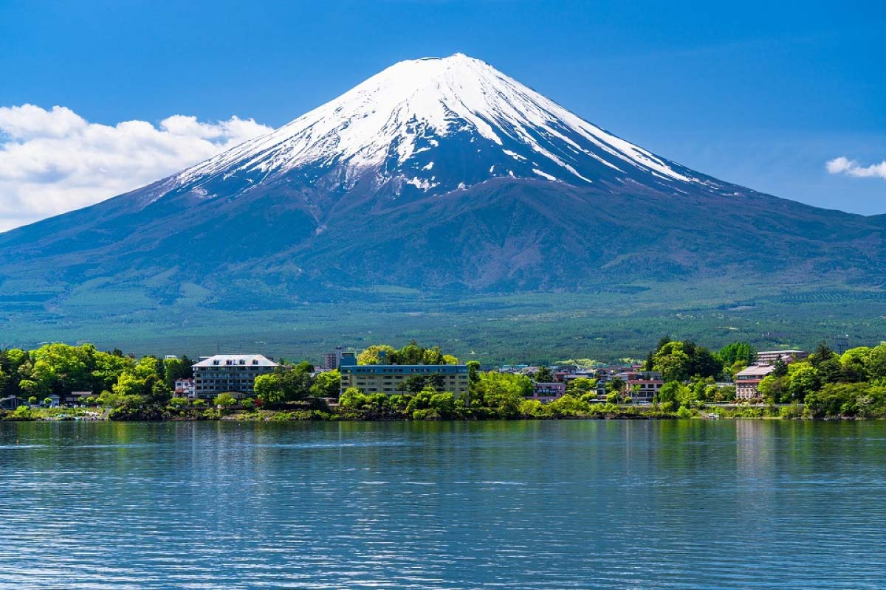

紹介
日本で一番標高の高い山、富士山（別名不二山）。 山梨県と静岡県のはざまに位置する活火山は、日本を象徴する山として、たくさんの人に愛されています。 日本三名山、日本百名山にも選定され、毎年、老若男女問わず、登山者が絶えない人気スポットです（シーズン：7月～8月）。 登山道は4つ（富士宮ルート・須走ルート・御殿場ルート・吉田ルート）あり、五合目までは、道路や登山道も整備されていることから、バスや車で訪れる人も多く、晴れていれば眼下に山中湖、富士吉田市、河口湖と一望できる人気観光スポットです。
写真

地理的特徴
富士山の標高は3,776.24メートルで、その美しい円錐形の火山は多くの観光客や写真家を魅了している。 富士五湖の近くに位置し、あらゆる角度から様々な景色を楽しむことができる。
文化と歴史
富士山は日本文化の中で特別な位置を占めており、絵画や文学、宗教作品にしばしば登場する。 また、日本の伝統的な登山ゴールのひとつでもあり、毎年何千人もの登山家が富士山登頂に挑戦している。
富士山についてもっと知りたいですか？ 以下のサイトをご覧ください。富士山 Wikipedia